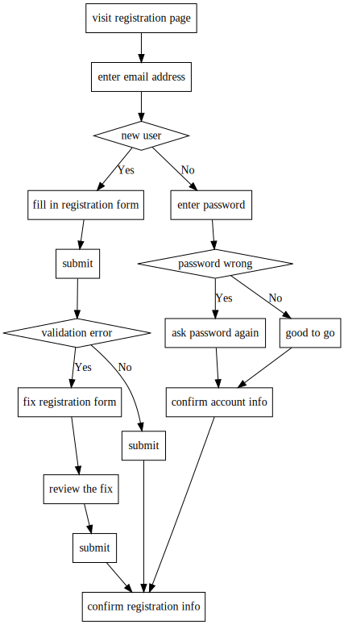
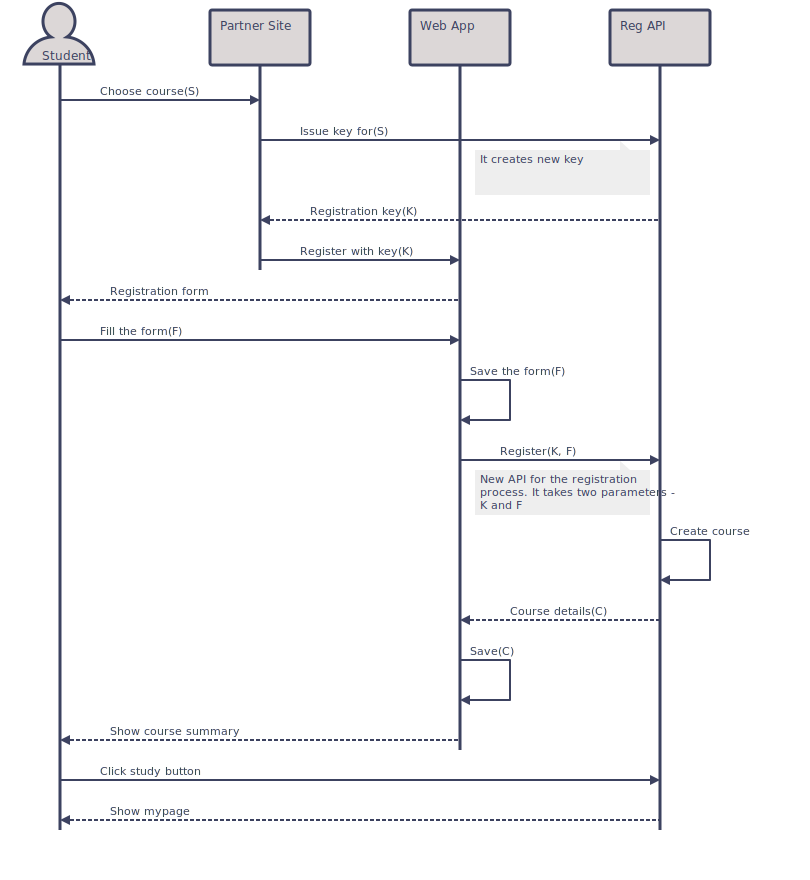

Markdoc
A markdown to html converter with sequence diagram and flowchart support. Generating documents including diagrams has advantages:
- Docs can be checked into version control like source code, and can compare changes effectively as it is all text
- Making and updating diagrams using drawing software is slow
It converts markdown codeblocks for diagrams using Graphviz and plotutils. Pseudocode to Graphviz is inspired by this gist. Pseudocode is converted to dot file and then Graphviz's dot program converts it to vector image. Sequence diagram uses sequence.pic macros from umlgraph to convert sequence diagram code to plotutls' pic format. Plotutils' pic2plot program generates vector image from the pic.
System requirements
- Ruby 1.9.2 and up
- Graphviz(tested with dot version 2.38.0)
- Plotutls(tested with pic2plot 2.6)
OS X
brew install graphviz plotutls
Linux(deb)
apt-get install graphviz plotutls
Installing
gem install markdoc
For bundler add gem markdoc to your Gemfile.
Usage
markdoc document.md > document.html
Generated html includes inline svg diagrams, eliminating need for attached image files.
Pseudocode blocks
Currently it supports only if branch logic, but you can achieve a lot with it. Include codeblock with pseudo language in your markdown.
```pseudo
visit registration page
enter email address
if new user
fill in registration form
submit
if validation error
fix registration form
review the fix
submit
else
submit
end
else
enter password
if password wrong
ask password again
else
good to go
end
confirm account info
end
confirm registration info
```
Or you could compile individual pseudocode to vector image. Below is generated by pseudo2svg examples/example.pseudo > examples/flowchart.svg

Sequence diagram
Include codeblock with sequence language in your markdown.
```sequence Student = Actor P = Partner Site App = Web App Api = Reg API Student -> P : Choose course(S) P -> Api : Issue key for(S) P <~ Api : Registration key(K) P -> App : Register with key(K) Student <~ App : Registration form Student -> App : Fill the form(F) App : Save the form(F) App -> Api : Register(K, F) # New API Api : Create course App <~ Api : Course details(C) App : Save(C) Student <~ App : Show course summary Student -> Api : Click study button Student <~ Api : Show mypage ```
Or you could compile individual sequence diagram to vector image. Below is generated by sequence2svg examples/example.sequence > examples/sequence.svg

Boring legal stuff
The MIT License (MIT)
Copyright (c) Lkhagva Ochirkhuyag, 2015
Permission is hereby granted, free of charge, to any person obtaining a copy of this software and associated documentation files (the "Software"), to deal in the Software without restriction, including without limitation the rights to use, copy, modify, merge, publish, distribute, sublicense, and/or sell copies of the Software, and to permit persons to whom the Software is furnished to do so, subject to the following conditions:
The above copyright notice and this permission notice shall be included in all copies or substantial portions of the Software.
THE SOFTWARE IS PROVIDED "AS IS", WITHOUT WARRANTY OF ANY KIND, EXPRESS OR IMPLIED, INCLUDING BUT NOT LIMITED TO THE WARRANTIES OF MERCHANTABILITY, FITNESS FOR A PARTICULAR PURPOSE AND NONINFRINGEMENT. IN NO EVENT SHALL THE AUTHORS OR COPYRIGHT HOLDERS BE LIABLE FOR ANY CLAIM, DAMAGES OR OTHER LIABILITY, WHETHER IN AN ACTION OF CONTRACT, TORT OR OTHERWISE, ARISING FROM, OUT OF OR IN CONNECTION WITH THE SOFTWARE OR THE USE OR OTHER DEALINGS IN THE SOFTWARE.